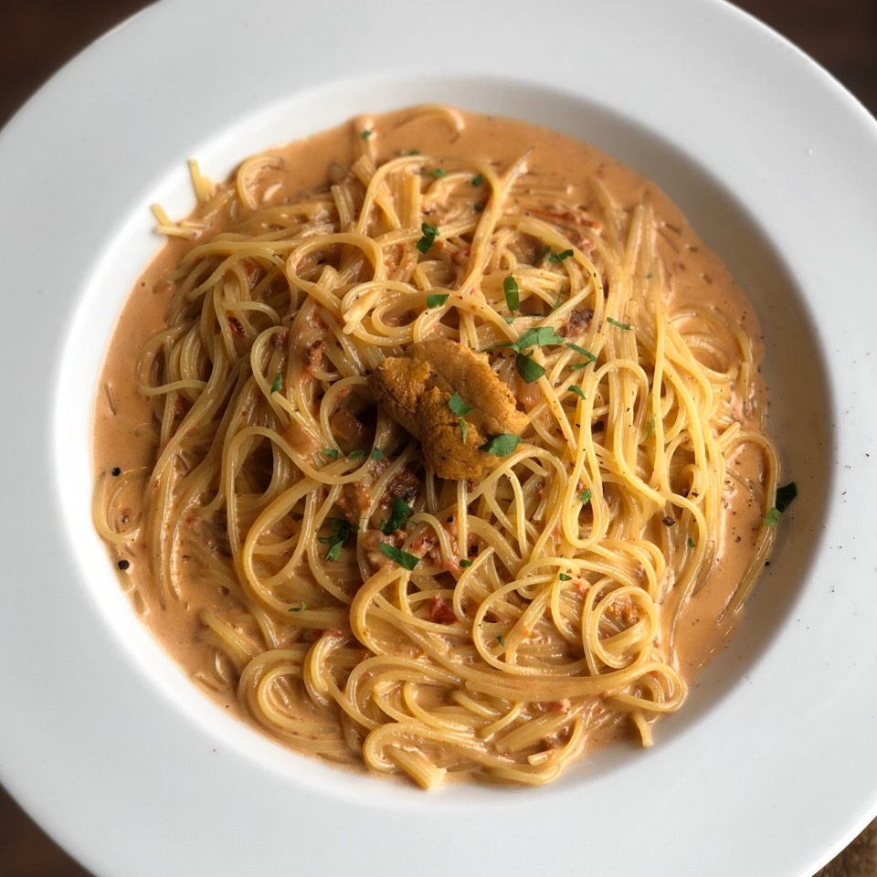

Uni Pasta

Description
Uni (pronounced [oo-nee]) means sea urchin in Japanese. Uni Pasta (うにパスタ) is a creamy Japanese-style pasta starring sea urchin. In this recipe, we have al-dente spaghetti coated with a luscious orange sauce made with fresh sea urchin, heavy cream, and white wine. The ingredients for the pasta are very simple, yet the sweet and salty uni flavor takes the center stage. The rest like sautéed garlic, shallot, and red pepper flakes work alongside to bring this gem together.
Original recipe here.
Ingredients
- Spaghetti (or bucatini or angel hair will do!)
- Fresh uni (sea urchin roe)
- Garlic
- Crushed red pepper or red pepper flakes
- Shallot
- Extra virgin olive oil
- White wine
- Heavy whipping cream
- Salt and pepper
- Kizami (shredded) nori for topping (optional)
Steps
- Cook spaghetti in boiling water.
- In a frying pan or skillet, sauté garlic and crushed red pepper flakes on medium-low heat, followed by minced shallot.
- Once the shallots are tender, add the white wine and cream and cook a little bit.
- Add the uni and break it into smaller chunks.
- Add cooked spaghetti and mix it all together. Add pasta cooking water to loosen it, if needed. Transfer pasta to serving bowls and serve immediately with additional uni and shredded nori topping.